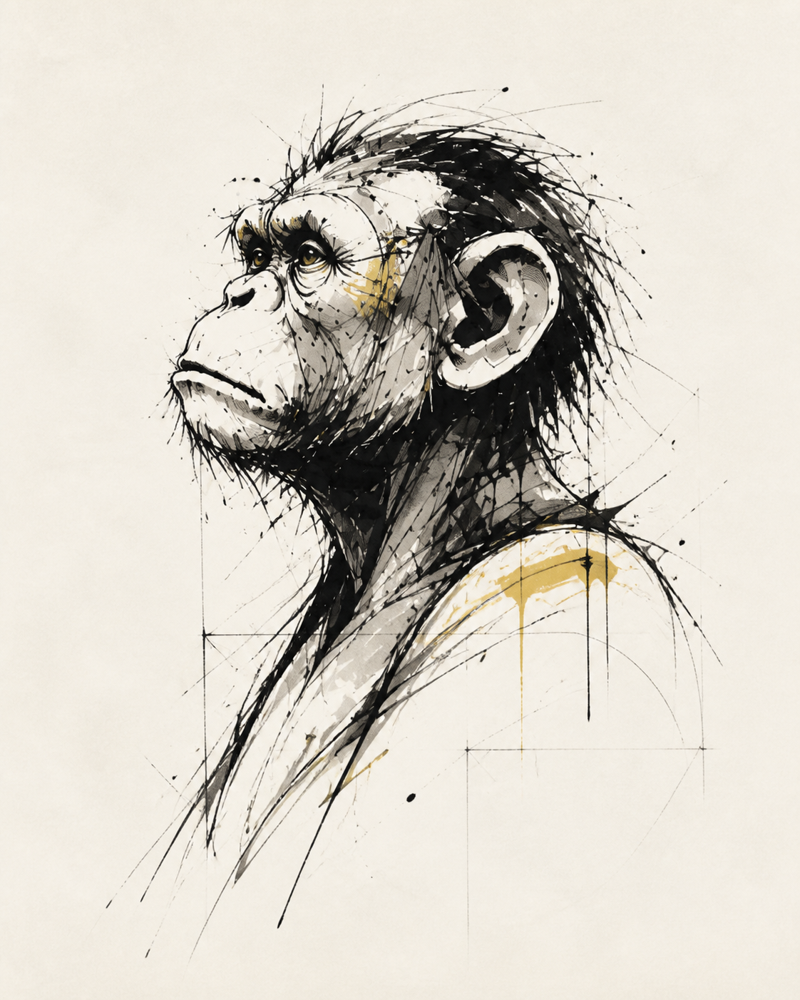

A question for good banana practice
Does a Banana
Need a Reason?
バナナを食べるのに理由がいるのか。
NO REASON REQUIRED. / 2026

SUBJECT 04CHIMPANZEESTATUS / ATTENTIVE
バナナに関しては、譲歩しない。
No concession on banana matters.Exhibition rooms
A question for good banana practice
バナナを食べるのに理由がいるのか。
NO REASON REQUIRED. / 2026

バナナに関しては、譲歩しない。
No concession on banana matters.Exhibition rooms